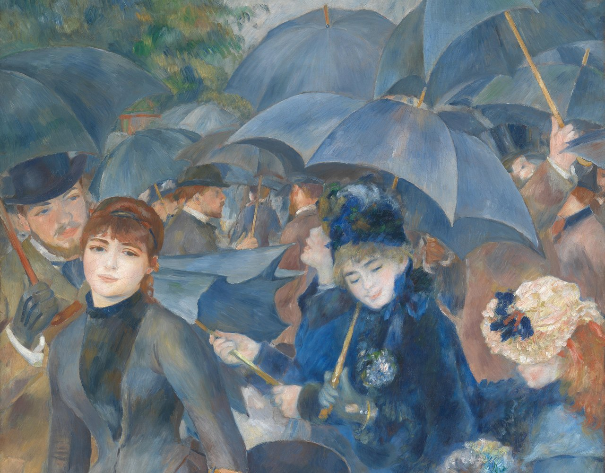
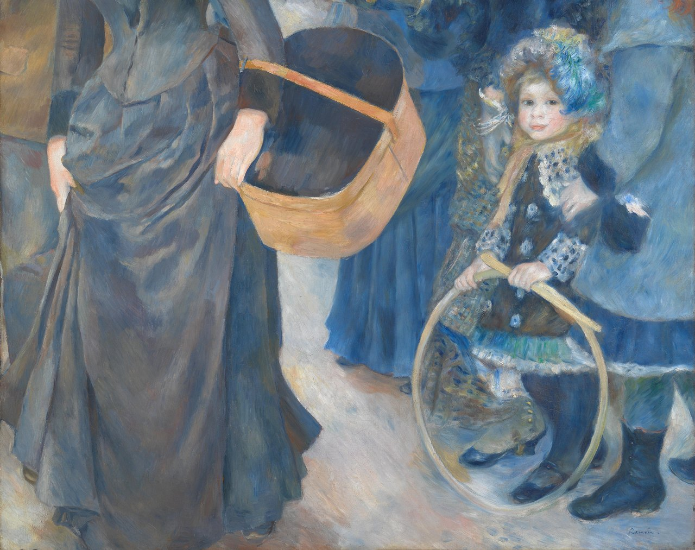

Optima Academy OnlineAn Education Experience Company
Optima Academy OnlineAn Education Experience CompanyGrammar Quiz & Module Close
Get your ear tuned. First, listen to a familiar passage — then answer one past-tense comprehension question by ear. This is a warm-up, not the quiz.
Warm up before the Grammar Quiz: run two or three verbs from the menu, present and passé composé. When every form turns green on the first try, you are ready.
- Past-tense listening items (~15 pts): hear a sentence with a pronoun in the passé composé, then answer — what was bought/seen, which pronoun, the participle agreement. Headphones recommended; you can replay each clip.
- Grammar items (~15 pts): choose the correct pronoun (le/la/l'/les), place it before the verb, make the past participle agree, and conjugate voir.
- Two attempts — your higher score counts. Review any misses before your second try.
After your first attempt, look at what you missed. Most Module 7 errors fall into three buckets: wrong pronoun for the noun's gender/number, pronoun in the wrong place (it goes before the verb), or missing participle agreement in the past. Name which one caught you, fix that one thing, and take your second attempt.
Before you close Module 7, go back to Renoir’s painting one last time: look closely at close-ups 1 and 2. You will compose three sentences using the tools below: what one person wears, a piece of clothing you like (with a pronoun), and one you do not like (ne + pronoun + verb + pas). The fiche (fact card) gives you the words for the painting, the word bank adds more, and the coach checks each sentence as you write. Your sentences are saved in All Your Work.

1
2Pierre-Auguste Renoir, Les Parapluies (The Umbrellas), c. 1881–86 · The National Gallery, London
- I can name and understand 20 clothing & shopping words by ear.
- I can use direct object pronouns (le / la / l' / les) to avoid repeating a noun.
- I can place the pronoun before the verb, including in the passé composé (je l'ai achetée).
- I can make the past participle agree with a preceding direct object.
- I can conjugate voir and describe a shopping trip in writing and out loud.
Two weeks ago, you repeated the same noun over and over. Now you replace it with a single smooth pronoun — in the present and the past — and you can shop in French from window to register. That's real progress. Félicitations ! (Congratulations!)